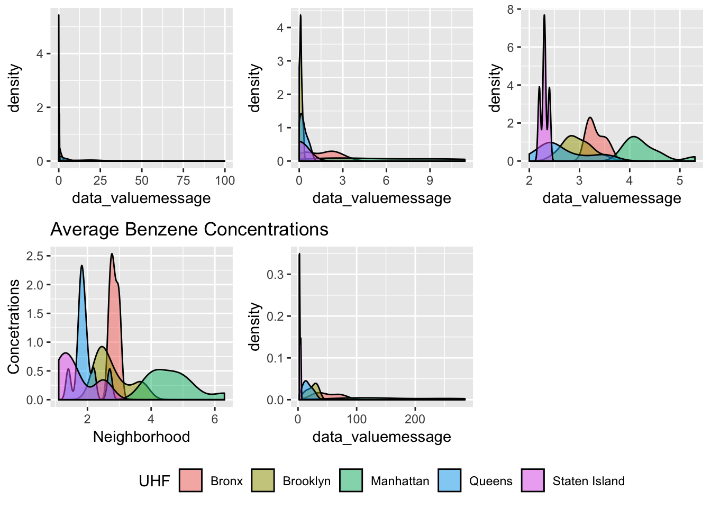

This Rmarkdown file contains code for reading in and cleaning the raw dataset.
Read in dataset. Looking at the variable for year, some observations had values which do not make sense. We thus kept only the observations with values for the variable year_description that make sense. Cleaned variable names.
asthma_df <- readr::read_csv('./Data/Air_Quality.csv')## Parsed with column specification:
## cols(
## indicator_data_id = col_double(),
## indicator_id = col_double(),
## name = col_character(),
## Measure = col_character(),
## geo_type_name = col_character(),
## geo_entity_id = col_double(),
## geo_entity_name = col_character(),
## year_description = col_character(),
## data_valuemessage = col_double()
## )## Warning: 33 parsing failures.
## row col expected actual file
## 2466 data_valuemessage a double Port Morris './Data/Air_Quality.csv'
## 2470 data_valuemessage a double Mt. Hope './Data/Air_Quality.csv'
## 2472 data_valuemessage a double Fordham './Data/Air_Quality.csv'
## 2473 data_valuemessage a double Marble Hill './Data/Air_Quality.csv'
## 2475 data_valuemessage a double Pelham Bay './Data/Air_Quality.csv'
## .... ................. ........ ........... ........................
## See problems(...) for more details.poverty_df <- readr::read_csv('./Data/Poverty.csv')## Parsed with column specification:
## cols(
## Year = col_character(),
## GeoTypeName = col_character(),
## Borough = col_character(),
## Geography = col_character(),
## `Geography ID` = col_character(),
## `Indicator Name` = col_character(),
## Number = col_number(),
## Percent = col_double(),
## `Notes Number` = col_logical(),
## `Notes Percent` = col_logical()
## )asthma_df %>%
group_by(year_description) %>%
summarize(counts = n())## # A tibble: 57 x 2
## year_description counts
## <chr> <int>
## 1 2-Year Winter Average 2009-2010 48
## 2 2005 264
## 3 2005-2007 960
## 4 2009-2011 960
## 5 2013 144
## 6 Annual Average 2009-2010 240
## 7 Bath Beach 3
## 8 Belmont 3
## 9 Briarwood 3
## 10 Brighton Beach 3
## # ... with 47 more rowsasthma_df <- asthma_df %>%
filter(year_description %in% c('2005', '2005-2007', '2009-2011', '2013')) %>%
janitor::clean_names()
poverty_df %>%
janitor::clean_names() %>%
select(-"notes_percent", -"notes_number")## # A tibble: 358 x 8
## year geo_type_name borough geography geography_id indicator_name number
## <chr> <chr> <chr> <chr> <chr> <chr> <dbl>
## 1 2011… Citywide New Yo… New York… 1 Poverty 1.71e6
## 2 2011… Borough Bronx Bronx 1 Poverty 4.28e5
## 3 2011… Borough Brookl… Brooklyn 2 Poverty 5.97e5
## 4 2011… Borough Manhat… Manhattan 3 Poverty 2.84e5
## 5 2011… Borough Queens Queens 4 Poverty 3.44e5
## 6 2011… Borough Staten… Staten I… 5 Poverty 5.85e4
## 7 2011… Neighborhood… Queens Bayside … 404 Poverty 7.54e3
## 8 2011… Neighborhood… Brookl… Bedford … 203 Poverty 8.94e4
## 9 2011… Neighborhood… Brookl… Bensonhu… 209 Poverty 3.37e4
## 10 2011… Neighborhood… Brookl… Borough … 206 Poverty 9.28e4
## # ... with 348 more rows, and 1 more variable: percent <dbl>Looking at the different observations recorded in the dataset. There are 18 unique kinds of observations recorded for NYC overall, by boroughs, and by neighborhoods for the corresponding years.
asthma_df %>%
mutate(obsv = stringr::str_c(name, measure, sep = " ")) %>%
group_by(obsv) %>%
summarize(counts = n())## # A tibble: 18 x 2
## obsv counts
## <chr> <int>
## 1 Air Toxics Concentrations- Average Benzene Concentrations Avera… 48
## 2 Air Toxics Concentrations- Average Formaldehyde Concentrations … 48
## 3 Boiler Emissions- Total NOx Emissions Per km2 48
## 4 Boiler Emissions- Total PM2.5 Emissions Per km2 48
## 5 Boiler Emissions- Total SO2 Emissions Per km2 48
## 6 O3-Attributable Asthma ED Visits Rate- 18 Yrs and Older 192
## 7 O3-Attributable Asthma ED Visits Rate- Children 0 to 17 Yrs Old 192
## 8 O3-Attributable Asthma Hospitalizations Rate- 18 Yrs and Older 192
## 9 O3-Attributable Asthma Hospitalizations Rate- Children 0 to 17 … 192
## 10 O3-Attributable Cardiac and Respiratory Deaths Rate 192
## 11 PM2.5-Attributable Asthma ED Visits Rate- 18 Yrs and Older 192
## 12 PM2.5-Attributable Asthma ED Visits Rate- Children 0 to 17 Yrs … 192
## 13 PM2.5-Attributable Cardiovascular Hospitalizations (Adults 40 Y… 192
## 14 PM2.5-Attributable Deaths Rate - Adults 30 Yrs and Older 192
## 15 PM2.5-Attributable Respiratory Hospitalizations (Adults 20 Yrs … 192
## 16 Traffic Density- Annual Vehicle Miles Traveled (VMT) for Cars P… 56
## 17 Traffic Density- Annual Vehicle Miles Traveled (VMT) for Trucks… 56
## 18 Traffic Density- Annual Vehicle Miles Traveled (VMT) Per 100 km2 56Save this cleaned dataset in a csv file.
readr::write_csv(asthma_df, path = './Data/nyc_asthma_cleaned.csv')asthma_clean = asthma_df %>%
mutate(geo_entity_id = as.factor(geo_entity_id),
UHF = recode(geo_entity_id, "101" = "Bronx", "102" = "Bronx", "103" = "Bronx", "104" = "Bronx", "105" = "Bronx", "106" = "Bronx", "107" = "Bronx", "201" = "Brooklyn", "202" = "Brooklyn", "203" = "Brooklyn", "204" = "Brooklyn", "205" = "Brooklyn", "206" = "Brooklyn", "207" = "Brooklyn", "208" = "Brooklyn", "209" = "Brooklyn", "210" = "Brooklyn", "211" = "Brooklyn", "301" = "Manhattan", "302" = "Manhattan", "303" = "Manhattan", "304" = "Manhattan", "305" = "Manhattan", "306" = "Manhattan", "307" = "Manhattan", "308" = "Manhattan", "309" = "Manhattan", "310" = "Manhattan", "401" = "Queens", "402" = "Queens", "403" = "Queens", "404" = "Queens", "405" = "Queens", "406" = "Queens", "407" = "Queens", "408" = "Queens", "409" = "Queens", "410" = "Queens", "501" = "Staten Island", "502" = "Staten Island", "503" = "Staten Island", "504" = "Staten Island")) %>%
filter(geo_type_name == "UHF42")
benz_dens = asthma_clean %>%
filter(name == "Air Toxics Concentrations- Average Benzene Concentrations") %>%
group_by(UHF) %>%
ggplot(aes(x = data_valuemessage, fill = UHF)) +
geom_density(alpha = 0.5) +
labs(title = "Average Benzene Concentrations",
x = "Neighborhood",
y = "Concetrations") +
theme(legend.position = "none")
SO2_dens = asthma_clean %>%
filter(name == "Boiler Emissions- Total SO2 Emissions") %>%
group_by(UHF) %>%
ggplot(aes(x = data_valuemessage, fill = UHF)) +
geom_density(alpha = 0.5) +
theme(legend.position = "none")
Formaldehyde_dens = asthma_clean %>%
filter(name == "Air Toxics Concentrations- Average Formaldehyde Concentrations") %>%
group_by(UHF) %>%
ggplot(aes(x = data_valuemessage, fill = UHF)) +
geom_density(alpha = 0.5) +
theme(legend.position = "none")
PM_dens = asthma_clean %>%
filter(name == "Boiler Emissions- Total PM2.5 Emissions") %>%
group_by(UHF) %>%
ggplot(aes(x = data_valuemessage, fill = UHF)) +
geom_density(alpha = 0.5) +
theme(legend.position = "none")
NO2_dens = asthma_clean %>%
filter(name == "Boiler Emissions- Total NOx Emissions") %>%
group_by(UHF) %>%
ggplot(aes(x = data_valuemessage, fill = UHF)) +
geom_density(alpha = 0.5) +
theme(legend.position = "bottom")
(SO2_dens + PM_dens + Formaldehyde_dens + benz_dens + NO2_dens)